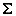

DocBook 4 Author Mode Actions
A variety of actions are available for DocBook 4 documents in the DocBook4 menu, toolbar, contextual menu, and the Content Completion Assistant.
DocBook 4 Toolbar Actions
The following default actions are available on the DocBook toolbar when editing in Author mode (by default, most of them are also available in the DocBook4 menu and in various submenus of the contextual menu):
- Bold
- Emphasizes the selected text by surrounding it with a bold tag. You can use this action on multiple non-contiguous selections.
- Italic
- Emphasizes the selected text by surrounding it with an italic tag. You can use this action on multiple non-contiguous selections.
- Underline
- Emphasizes the selected text by surrounding it with an underline tag. You can use this action on multiple non-contiguous selections.
- Link Actions Drop-Down Menu
-
The following link actions are available from this menu:
- Cross reference (link)
- Opens a dialog box that allows you to select a target to insert as a hypertext link.
- Cross reference (xref)
- Inserts a cross reference to other parts of the document.
- Web Link (ulink)
- Inserts a link that addresses its target with a URL (Universal Resource Locator).
- Insert OLink
-
Opens an OLink dialog box that allows you to insert a link that addresses its target indirectly, using the values of the
@targetdocand@targetptrattributes that are present in a Targetset file.Figure 1. Insert OLink Dialog Box 
After you choose the Targetset URL, the structure of the target documents is presented. For each target document (
@targetdoc), its content is displayed allowing you to easily identify the@targetptrfor the<olink>element that will be inserted. You can also use the search fields to quickly identify a target. If you already know the values for targetdoc and targetptr, you can insert them directly in the corresponding fields. You can also edit an<olink>using the Edit OLink action that is available on the contextual menu. The last used Targetset URL will be used to identify the edited target.To insert XREF text into the
<olink>, enter the text in the xreftext field and make sure the Insert xreftext in the OLink option is selected. - Insert URI
- Inserts a URI element. The URI identifies a Uniform Resource Identifier (URI) in content.
- Edit OLink
- Opens a dialog box that allows you edit an existing OLink. See the Insert OLink action for more information.
- Insert Image
- Opens a dialog box that allows you to select the path of an image to insert at the cursor position. Depending on the current location, an image-type element is inserted. If the action is invoked between two block elements (such as paragraphs), the dialog box also allows you to provide a title.
 Insert Media
Resource
Insert Media
Resource- Opens a Choose Media dialog box that allows you to select the URL of a media object to be inserted into a document at the cursor position. The result will be that a reference to the specified video, audio, or embedded HTML frame is inserted and rendered in Author mode so that it can be played directly from there.
- Insert XInclude
- Opens a dialog box that allows you to browse and select content to be included and automatically generates the corresponding XInclude instruction.
 Section
Drop-Down Menu
Section
Drop-Down Menu-
The following actions are available from this menu:
 Insert
Section
Insert
Section- Inserts a new section or subsection in the document, depending on the current
context. For example, if the current context is
<sect1>, then a<sect2>is inserted. By default, this action also inserts a<para>element as a child node. The<para>element can be deleted if it is not needed. - Promote Section (Ctrl + Alt + LeftArrow (Command + Alt + LeftArrow on OS X))
- Promotes the current node as a sibling of the parent node.
- Demote Section (Ctrl + Alt + RightArrow (Command + Alt + RightArrow on OS X))
- Demotes the current node a child of the previous node.
 Insert Paragraph
Insert Paragraph- Insert a new paragraph element at current cursor position.
- Insert Equation
- Opens the XML Fragment Editor that allows you to insert and edit MathML notations.
 Insert List Item
Insert List Item- Inserts a list item in the current list type.
 Insert Ordered
List
Insert Ordered
List- Inserts an ordered list at the cursor position. A child list item is also automatically inserted by default. You can also use this action to convert selected paragraphs or other types of lists to an ordered list.
 Insert Itemized
List
Insert Itemized
List- Inserts an itemized list at the cursor position. A child list item is also automatically inserted by default. You can also use this action to convert selected paragraphs or other types of lists to an itemized list.
- Insert Variable List
- Inserts a DocBook variable list. A child list item is also inserted automatically by default. You can also use this action to convert selected paragraphs or other types of lists to a variable list.
- Insert Procedure List
- Inserts a DocBook
<procedure>element. A<step>child element is also inserted automatically. You can also use this action to convert selected paragraphs or other types of lists to a procedure list.  Sort
Sort- Sorts cells or list items in a table.
 Insert Table
Insert Table- Opens a dialog box that allows you to configure and insert a table. You can generate a
header and footer, set the number of rows and columns of the table and decide how the
table is framed. You can also use this action to convert selected paragraphs, lists, and
inline content (mixed content, text plus markup, that is rendered inside a block element) into a table,
with the selected content inserted in the first column, starting from the first row
after the header (if a header is inserted).Note: If the selection contains a mixture of elements that cannot be converted, you will receive an error message saying that Only lists, paragraphs, or inline content can be converted to tables.
- Insert Row
- Inserts a new table row with empty cells below the current row. This action is available when the cursor is positioned inside a table.
 Delete Row(s)
Delete Row(s)- Deletes the table row located at the cursor position or multiple rows in a selection.
- Insert Column
- Inserts a new table column with empty cells after the current column. This action is available when the cursor is positioned inside a table.
- Delete Column(s)
- Deletes the table column located at the cursor position or multiple columns in a selection.
 Table
Properties
Table
Properties- Opens the Table properties dialog box that allows you to configure properties of a table (such as frame borders).
 Join Cells
Join Cells- Joins the content of the selected cells (both horizontally and vertically).
 Split Cell
Split Cell- Splits the cell at the cursor location. If Oxygen XML Editor detects more than one option to split the cell, a dialog box will be displayed that allows you to select the number of rows or columns to split the cell into.
DocBook4 Contextual Menu Actions
The following actions are available in the contextual menu when editing in Author mode (most of them are also available in the DocBook4 menu at the top of the interface):
 Add File to Review
Task
Add File to Review
Task- This action can be used to add the current document to a task in the Content Fusion Tasks Manager view. Oxygen Content Fusion is a flexible, intuitive collaboration platform designed to adapt to any type of documentation review workflow. This functionality is available through a pre-installed connector add-on. To fully take advantage of all of the benefits and features of Content Fusion, your organization will need an Oxygen Content Fusion Enterprise Server. For more information, see the Oxygen Content Fusion website.
 Edit
Attributes
Edit
Attributes- Displays an in-place attributes editor that allows you to manage the attributes of an element.
- Edit Profiling Attributes
- Allows you to change the profiling attributes defined on all selected elements.
 Cut (Ctrl + X (Command + X on
OS X))
Cut (Ctrl + X (Command + X on
OS X))- Removes the currently selected content from the document and places it in the clipboard.
 Copy (Ctrl + C (Command + C on
OS X))
Copy (Ctrl + C (Command + C on
OS X))- Places a copy of the currently selected content in the clipboard.
 Paste (Ctrl + V (Command + V on
OS X))
Paste (Ctrl + V (Command + V on
OS X))- Inserts the current clipboard content into the document at the cursor position.
 Paste special
submenu
Paste special
submenu-
This submenu includes the following special paste actions:
- Paste As XInclude
- Allows you to create an
<xi:include>element that references a DocBook element copied from Author mode. The operation fails if the copied element does not have a declared ID. - Paste as link
- Allows you to create a
<link>element that references a DocBook element copied from Author mode. The operation fails if the copied element does not have a declared ID. - Paste as xref
- Allows you to create an
<xref>element that references a DocBook element copied from Author mode. The operation fails if the copied element does not have a declared ID.
- Image Map Editor
- This action is available in the contextual menu when it is invoked on an image. This action applies an image map to the current image (if one does not already exist) and opens the Image Map Editor dialog box. This feature allows you to create hyperlinks in specific areas of an image that will link to various destinations.
- Insert submenu
-
This submenu includes the following insert actions that are specific to the DocBook framework:
- Insert Table
- Opens a dialog box that allows you to configure and insert a table. You can generate a
header and footer, set the number of rows and columns of the table and decide how the
table is framed. You can also use this action to convert selected paragraphs, lists, and
inline content (mixed content, text plus markup, that is rendered inside a block element) into a table,
with the selected content inserted in the first column, starting from the first row
after the header (if a header is inserted).Note: If the selection contains a mixture of elements that cannot be converted, you will receive an error message saying that Only lists, paragraphs, or inline content can be converted to tables.
- Insert Image
- Inserts an image reference at the cursor position. Depending on the current location, an image-type element is inserted.
- Insert Media
Resource
- Opens a Choose Media dialog box that allows you to select the URL of a media object to be inserted into a document at the cursor position. The result will be that a reference to the specified video, audio, or embedded HTML frame is inserted and rendered in Author mode so that it can be played directly from there.
- Insert Equation
- Opens the XML Fragment Editor that allows you to insert and edit MathML notations.
 Insert Paragraph
Insert Paragraph- Inserts a new paragraph element at current cursor position.
 Insert
Section
Insert
Section- Inserts a new section element in the document, depending on the current context.
- Insert XInclude
- Opens a dialog box that allows you to browse and select content to be included and automatically generates the corresponding XInclude instruction.
- Insert Entity
- Allows you to insert a predefined entity or character entity. Surrogate
character entities (range #x10000 to #x10FFFF) are also accepted. Character
entities can be entered in one of the following forms:
- #<decimal value> - e.g. #65
- &#<decimal value> - e.g. A
- #x<hexadecimal value> - e.g. #x41
- &#x<hexadecimal value> - e.g. A
- Section submenu
-
The following actions are available in this submenu:
- Promote Section (Ctrl + Alt + LeftArrow (Command + Alt + LeftArrow on OS X))
- Promotes the current node as a sibling of the parent node.
- Demote Section (Ctrl + Alt + RightArrow (Command + Alt + RightArrow on OS X))
- Demotes the current node a child of the previous node.
- Link submenu
-
The following actions are available in this submenu:
- Cross reference (link)
- Opens a dialog box that allows you to select a target to insert as a hypertext link.
- Cross reference (xref)
- Inserts a cross reference to other parts of the document.
- Web Link (ulink)
- Inserts a link that addresses its target with a URL (Universal Resource Locator).
- Insert OLink
-
Opens an OLink dialog box that allows you to insert a link that addresses its target indirectly, using the values of the
@targetdocand@targetptrattributes that are present in a Targetset file.Figure 2. Insert OLink Dialog Box
After you choose the Targetset URL, the structure of the target documents is presented. For each target document (
@targetdoc), its content is displayed allowing you to easily identify the@targetptrfor the<olink>element that will be inserted. You can also use the search fields to quickly identify a target. If you already know the values for targetdoc and targetptr, you can insert them directly in the corresponding fields. You can also edit an<olink>using the Edit OLink action that is available on the contextual menu. The last used Targetset URL will be used to identify the edited target.To insert XREF text into the
<olink>, enter the text in the xreftext field and make sure the Insert xreftext in the OLink option is selected. - Insert URI
- Inserts a URI element. The URI identifies a Uniform Resource Identifier (URI) in content.
- Edit OLink
- Opens a dialog box that allows you edit an existing OLink. See the Insert OLink action for more information.
- Table actions
-
The following table editing actions are available in the contextual menu when it is invoked on a table:
- Insert Rows
- Opens a dialog box that allows you to insert any number of rows and specify the position where they will be inserted (Above or Below the current row).
- Delete Row(s)
- Deletes the table row located at the cursor position or multiple rows in a selection.
- Insert Columns
- Opens a dialog box that allows you to insert any number of columns and specify the position where they will be inserted (Above or Below the current column).
- Delete Column(s)
- Deletes the table column located at the cursor position or multiple columns in a selection.
- Join Cells
- Joins the content of the selected cells (both horizontally and vertically).
- Split Cell
- Splits the cell at the cursor location. If Oxygen XML Editor detects more than one option to split the cell, a dialog box will be displayed that allows you to select the number of rows or columns to split the cell into.
- Sort
- Sorts cells or list items in a table.
- Table
Properties
- Opens the Table properties dialog box that allows you to configure properties of a table (such as frame borders).
- Other Actions submenu
- This submenu give you access to all the usual contextual menu actions.
- Generate IDs
-
Oxygen XML Editor generates unique IDs for the current element (or elements), depending on how the action is invoked:
- When invoked on a single selection, an ID is generated for the selected element at the cursor position.
- When invoked on a block of selected content, IDs are generated for all top-level elements and elements listed in the ID Options dialog box that are found in the current selection.
Note: The Generate IDs action does not overwrite existing ID values. It only affects elements that do not already have an@idattribute. - Select submenu
-
This submenu allows you to select the following:
- Element
- Selects the entire element at the current cursor position.
- Content
- Selects the entire content of the element at the current cursor position, excluding the start and end tag. Performing this action repeatedly will result in the selection of the content of the ancestor of the currently selected element content.
- Parent
- Selects the entire parent element at the current cursor position.
- Text submenu
-
This submenu contains the following actions:
- To Lower Case
- Converts the selected content to lower case characters.
- To Upper Case
- Converts the selected content to upper case characters.
- Capitalize Sentences
- Converts to upper case the first character of every selected sentence.
- Capitalize Words
- Converts to upper case the first character of every selected word.
- Count Words
- Counts the number of words and characters (no spaces) in the entire document
or in the selection for regular content and read-only content. Note: The content marked as deleted with change tracking is ignored when counting words.
- Convert Hexadecimal Sequence to Character (Ctrl + Shift + X (Command + Shift + X on OS X))
-
Converts a sequence of hexadecimal characters to the corresponding Unicode character. The action can be invoked if there is a selection containing a valid hexadecimal sequence or if the cursor is placed at the right side of a valid hexadecimal sequence. A valid hexadecimal sequence can be composed of 2 to 4 hexadecimal characters and may or may not be preceded by the
0xor0Xprefix. Examples of valid sequences and the characters they will be converted to:0x0045will be converted toE0X0125toĥ265toɥ2190to←Note: For more information about finding the hexadecimal value of a character, see Finding the Decimal, Hexadecimal, or Character Entity Equivalent.
- Refactoring submenu
-
Contains a series of actions designed to alter the XML structure of the document:
 Toggle
Comment
Toggle
Comment- Encloses the currently selected text in an XML comment, or removes the comment if it is commented.
- Move Up (Alt + UpArrow)
- Moves the current node or selected nodes in front of the previous node.
- Move Down (Alt + DownArrow)
- Moves the current node or selected nodes after the subsequent node.
- Split Element (Alt + Shift + D (Ctrl + Alt + D on OS X))
- Splits the content of the closest element that contains the position of the cursor. Thus, if the cursor is positioned at the beginning or at the end of the element, the newly created sibling will be empty.
- Join Elements
- Joins two adjacent block elements that have the same name. The action is available only when the cursor position is between the two adjacent block elements. Also, joining two block elements can be done by pressing the Delete or Backspace keys and the cursor is positioned between the boundaries of these two elements.
- Surround with Tags (Ctrl + E (Command + E on OS X))
- Allows you to choose a tag to enclose a selected portion of content. If there is no
selection, the start and end tags are inserted at the cursor position.
- If the Position cursor between tags option is selected in the Content Completion preferences page, the cursor is placed between the start and end tag.
- If the Position cursor between tags option is not selected in the Content Completion preferences page, the cursor is placed at the end of the start tag, in an insert-attribute position.
- Surround with '[tag]' (Ctrl + ForwardSlash (Command + ForwardSlash on OS X))
- Surround the selected content with the last tag used.
 Rename
Element
Rename
Element- The element from the cursor position, and any elements with the same name, can be renamed according with the options from the Rename dialog box.
 Delete Element Tags
Delete Element Tags- Deletes the tags of the closest element that contains the position of the cursor. This operation is also executed if the start or end tags of an element are deleted by pressing the Delete or Backspace keys.
- Remove All Markup
- Removes all the XML markup inside the selected block of content and keeps only the text content.
 Remove
Text
Remove
Text- Removes the text content of the selected block of content and keeps the markup intact with empty elements.
- Attributes Refactoring Actions
-
Contains built-in XML refactoring operations that pertain to attributes with some of the information preconfigured based upon the current context.
- Add/Change attribute
- Allows you to change the value of an attribute or insert a new one.
- Convert attribute to element
- Allows you to change an attribute into an element.
- Delete attribute
- Allows you to remove one or more attributes.
- Rename attribute
- Allows you to rename an attribute.
- Replace in attribute value
- Allows you to search for a text fragment inside an attribute value and change the fragment to a new value.
- Comments Refactoring Actions
-
Contains built-in XML refactoring operations that pertain to comments with some of the information preconfigured based upon the current context.
- Delete comments
- Allows you to delete comments found inside one or more elements.
- Elements Refactoring Actions
-
Contains built-in XML refactoring operations that pertain to elements with some of the information preconfigured based upon the current context.
- Delete element
- Allows you to delete elements.
- Delete element content
- Allows you to delete the content of elements.
- Insert element
- Allows you to insert new elements.
- Rename element
- Allows you to rename elements.
- Unwrap element
- Allows you to remove the surrounding tags of elements, while keeping the content unchanged.
- Wrap element
- Allows you to surround elements with element tags.
- Wrap element content
- Allows you to surround the content of elements with element tags.
- Fragments Refactoring Actions
-
Contains built-in XML refactoring operations that pertain to XML fragments with some of the information preconfigured based upon the current context.
- Insert XML fragment
- Allows you to insert an XML fragment.
- Replace element content with XML fragment
- Allows you to replace the content of elements with an XML fragment.
- Replace element with XML fragment
- Allows you to replace elements with an XML fragment.
- Review submenu
-
This submenu includes the following actions:
- Track Changes
- Enables or disables the Track Changes support for the current document.
 Accept Change(s) and Move to Next
Accept Change(s) and Move to Next- Accepts the Tracked Change located at the cursor position or all of the changes in a selection and then moves to the next change. If you select a part of a deletion or insertion change, only the selected content is accepted.
- Accept All Changes
- Accepts all Tracked Changes in the current document.
- Reject Change(s) and Move to Next
- Rejects the Tracked Change located at the cursor position or all of the changes in a selection and then moves to the next change. If you select a part of a deletion or insertion change, only the selected content is rejected.
- Reject All Changes
- Rejects all Tracked Changes in the current document.
 Comment
Change
Comment
Change- Opens a dialog box that allows you to add a comment to an existing Tracked Change. The comment will appear in a callout and a tooltip when hovering over the change. If the action is selected on an existing commented change, the dialog box will allow you to edit the comment.
 Highlight
Highlight- Enables the highlighting tool that allows you to mark text in your document.
- Colors
- Allows you to select the color for highlighting text.
- Stop highlighting
- Use this action to deactivate the highlighting tool.
- Remove highlight(s)
- Use this action to remove highlighting from the document.
 Add
Comment
Add
Comment- Inserts a comment at the cursor position. The comment appears in a callout box and a tooltip (when hovering over the change).
 Show/Edit
Comment
Show/Edit
Comment- Opens a dialog box that displays the discussion thread and allows the current user to edit comments that do not have replies. If you are not the author who inserted the original comment, the dialog box just displays the comment without the possibility of editing it.
- Remove Comment
- Removes a selected comment. If you remove a comment that contains replies, all of the replies will also be removed.
- Manage Reviews
- Opens the Review view.
- Folding submenu
-
This submenu includes the following actions:
- Toggle Fold
- Toggles the state of the current fold.
 Collapse Other
Folds (Ctrl + NumPad/ (Command + NumPad/ on OS X))
Collapse Other
Folds (Ctrl + NumPad/ (Command + NumPad/ on OS X))- Folds all the elements except the current element.
- Collapse Child Folds (Ctrl + NumPad. (Command + NumPad. on OS X))
- Folds the elements indented with one level inside the current element.
- Expand Child Folds
- Unfolds all child elements of the currently selected element.
 Expand
All (Ctrl + NumPad* (Command + NumPad* on OS
X))
Expand
All (Ctrl + NumPad* (Command + NumPad* on OS
X))- Unfolds all elements in the current document.
-
Moves the cursor to the definition of the current element.
- Inspect Styles
- Opens the CSS Inspector view that allows you to examine the CSS rules that match the currently selected element.
- Options
- Opens the Author mode preferences page where you can configure various options with regard to the Author editing mode.
Floating Contextual Toolbar for DocBook
Oxygen XML Editor includes a dynamic feature where certain editing contexts will trigger a floating toolbar with common actions that are available in the current editing context.
- When a
<para>or<listitem>element has a selection inside, the floating toolbar includes actions such as Bold, Italic, Underline, Subscript, and Superscript.
Subscript, and Superscript. - When an
<imagedata>or<videodata>element is selected, the floating toolbar includes a URL chooser where you can select the appropriate target. - When an
<olink>element is selected, the floating toolbar includes an Edit OLink action. - When a
<link>or<include>element is selected, the floating toolbar includes a URL chooser where you can select the appropriate target. - When a
<programlisting>element is selected, the floating toolbar includes a drop-down control where you can select the value of the@languageattribute. - When an
<itemizedlist>,<orderdlist>,<variablelist>, or<procedure>element is selected, the floating toolbar includes actions for converting it to a different type of list or sorting the list. - When a
<listitem>,<varlistentry>, or<step>element is selected, the floating toolbar includes actions for moving the item up or down in the list/procedure. - When a
<row>or<tr>element is selected in a table, the floating toolbar includes various table-related actions (such as actions for editing table properties, inserting rows, or deleting rows). - When an
<entry>or<td>element is selected in a table, the floating toolbar includes various table-related actions (such as actions for editing table properties, inserting/deleting rows, or inserting/deleting columns). - When a
<table>element is selected, the floating toolbar includes actions for editing table properties or sorting the table.
DocBook 4 Drag/Drop (or Copy/Paste) Actions
Dragging a file from the Project view or DITA Maps Manager view
and dropping it into a DocBook 4 document that is edited in Author
mode, creates a link to the dragged file (the <ulink> DocBook element) at the
drop location. Copy and paste actions work the same.
You can also drag images or media files from your system explorer or the Project view and drop them
into a DocBook 4 document (or copy and paste). This will insert the appropriate element at
the drop or paste location (for example, dropping/pasting an image will insert the
<inlinegraphic> DocBook element with a @fileref
attribute).